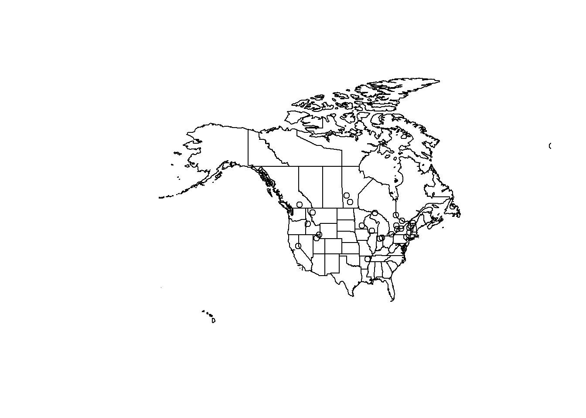
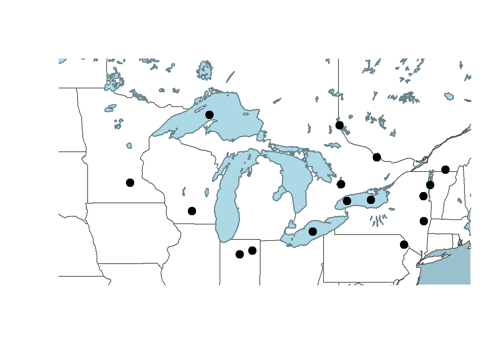

plot(monsters)2 Base R
2.1 Intro to plot()
R comes with tools to create basic graphs like scatter plots. Many spatial data packages extend these tools to work with spatial data, allowing us to use the plot() function to visualize spatial data in map form. This is often a quick and convenient way to visualize your data to check results.
It seems pretty intuitive, but let’s look at what happens if we use the plot command to plot our monsters data:
Whoops! What happened? If we don’t specify which column in the attribute table to plot, plot() tries to plot all of them sequentially. If you have a large dataset, this can take a while and it’s almost never what we actually want.
Let’s just plot the shapes without any data. We can do this by specifying that we want to plot the geometry column. In this case, it’s called “geom”.
plot(st_geometry(monsters)) #Both of these work, but require you to know the name of the geometry column:
#plot(monsters$geom)
#plot(monsters["geom"])We can see the distribution of the data and if you use your imagination, you might be able to make out the general shapes of the continents.
Let’s plot them by marker type:
plot(monsters["marker"])That’s pretty rough, but it gives us an idea of how the marker (animal forms) are distributed in the dataset.
2.2 Multiple Layers
We’ve seen that using plot() to visualize a single layer can be a quick way to make sure a data set contains what we think it does, but sometimes we need more context.
You might have noticed that each time we call the plot() function, the previous data we plotted disappears. So how can we show more than one layer on the same plot? plot() has an argument called add that is boolean (either TRUE or FALSE) and the default is set to FALSE. If we specify TRUE, we can add multiple layers to the same plot. It draws the plots in order, so whatever we want to be the lowest layer, we need to plot that first. Let’s try plotting the monsters (points) over the states layer (polygons):
plot(st_geometry(states))
plot(st_geometry(monsters), add=TRUE)
Ok! We’ve got two layers on the same set of axes! Yes, it’s hard to read, but we can fix that next.
2.3 Styling
The goal of styling our data is to help it communicate better. Open circles on top of state outlines are definitely difficult to understand. Let’s change the plotting arguments to make something more readable and to fit the story we want to tell.
How do we know what arguments are available to us? We can reference the documentation for the sf package’s version of plot here or you can type ?plot into your RStudio console and pick the sf version of the help for plot in the Help panel.
Most of the plotting arguments will need to be set in the first plot. The arguments in subsequent plots will just style the data.
#create a bounding box object for the zoom area of our map
aoi <- st_bbox(c(xmin = -96, xmax = -73, ymax = 50, ymin = 40), crs = st_crs(4326))
plot(
st_geometry(states), #plot the shape of the states
col="white", #fill color for the polygons (states)
border="gray30", #line color for the polygons (states)
#xlim=c(-89, -80), #set the limit of the x axis (longitude)
#ylim=c(40, 49), #set the limit of the y axis (latitude)
extent=aoi, #set the map extent to our AOI bounding box
#axes=TRUE, #makes ticks with lat/long coords... kinda messy
bg="lightblue3" #set the color behind the states (the ocean)
)
plot(st_geometry(lakes),
col="lightblue",
border="lightblue4",
lwd=1.5, #set line weight
add=TRUE)
plot(st_geometry(monsters),
pch = 19, #set the points to filled circles
cex = 1.5, #set symbol size
add=TRUE)
2.4 Add Text Labels
Let’s add some text labels so we know what the names of each of the monsters are. We can keep the same code to make the plots, but we need to add a call to the function text() at the end to write the text labels on top of the rest of the map.
#create a bounding box object for the zoom area of our map
aoi <- st_bbox(c(xmin = -89, xmax = -80, ymax = 49, ymin = 40), crs = st_crs(4326))
plot(
st_geometry(states),
col="white",
border="gray30",
extent=aoi,
bg="lightblue3"
)
plot(st_geometry(lakes),
col="lightblue",
border="lightblue4",
lwd=1.5,
add=TRUE)
plot(st_geometry(monsters),
pch = 19,
cex = 1.5,
add=TRUE)
text(monsters, #locations
monsters$Name, #labels
cex = 0.75, #scale for the characters (text)
pos = 1) #text position: 1=below, 2=left, 3=above, 4=rightWe don’t have much control over label placement with base plot() or the graphic’s final dimensions. If you want to edit this with more control, you could export a pdf file and edit it with a vector illustration software like Inkscape or Adobe Illustrator.
2.5 North Arrow & Scale Bar
The base plot() function isn’t really designed to make publication-ready maps. Adding a scale bar and north arrow are not really in the scope of this particular work flow so we’ll skip that here. However, the map we made probably doesn’t need those things if our audience is familiar with the Great Lakes area because they map itself would convey a sense of scale and orientation.
2.6 Summary
We’ve seen that we can create a map quickly using plot() that communicates clearly what each layer contains. We have some basic options for controlling the style of the map, but to make a profession-quality map, we probably need a package specifically designed to make maps. We’ll cover other map making packages in subsequent sections.